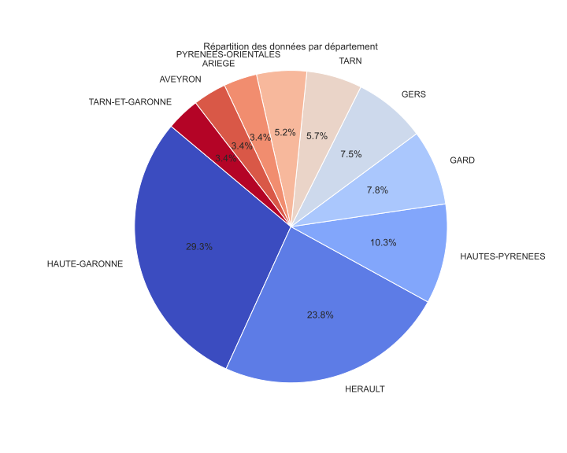

Pollution en Occitanie
L’industrie et la pollution sont souvent liées en raison des processus de production qui peuvent entraîner des émissions de substances polluantes dans l’air, l’eau et le sol.

Meteo vs Pollution
Voici une page web qui nous en apprendra sur le lien entre les conditions météorologiques et la pollution :
Dispersion des polluants : Les conditions météorologiques, particulièrement la vitesse et la direction du vent, jouent un rôle essentiel dans la dispersion des polluants atmosphériques. Un vent fort peut disperser la pollution sur une grande surface, tandis qu’un vent faible peut entraîner l’accumulation de polluants près de leur source, aggravant ainsi la qualité de l’air.
Inversion thermique : L’inversion thermique, un phénomène météorologique, se produit lorsque l’air plus chaud reste piégé au-dessus de l’air plus froid, empêchant ainsi la montée des polluants. Cela peut entraîner une accumulation de pollution de l’air, surtout dans les zones urbaines.
Précipitations : Les précipitations, comme la pluie et la neige, nettoient l’air en entraînant les polluants vers le sol. Ainsi, après une période de précipitations, l’air tend à être plus propre.
Température et réactions chimiques : Les réactions chimiques qui se produisent dans l’atmosphère, notamment la formation de smog, sont souvent influencées par la température. Les jours chauds et ensoleillés peuvent favoriser la formation de polluants photochimiques, tels que l’ozone troposphérique.
Facteurs climatiques : Les phénomènes climatiques à long terme, comme les changements climatiques, peuvent aussi affecter la qualité de l’air. Des températures plus élevées peuvent favoriser la formation d’ozone troposphérique, un polluant atmosphérique nocif.
En résumé, les conditions météorologiques peuvent influencer la dispersion, l’accumulation et la formation de polluants atmosphériques, ce qui a un impact direct sur la qualité de l’air.
Exemple :
Distribution des Principaux Polluants par Département en Occitanie
Ce diagramme circulaire (ou camembert) illustre la répartition des cinq principaux polluants atmosphériques dans les différents départements de la région Occitanie. Chaque segment du graphique représente un département spécifique, avec la taille du segment reflétant la proportion de chaque polluant dans ce département. Cette visualisation aide à identifier rapidement les zones avec des niveaux élevés de certains polluants, fournissant ainsi des informations clés pour les initiatives de surveillance et de réduction de la pollution. Elle met en lumière les défis spécifiques en matière de qualité de l'air que chaque département peut rencontrer, soulignant l'importance d'approches ciblées pour améliorer la qualité de l'air dans la région.

Analyse Comparative des Niveaux de Polluants dans les Villes de la Région Occitanie
Ce graphique interactif présente une comparaison des niveaux moyens de divers polluants atmosphériques dans les villes majeures d'Occitanie. Chaque groupe de barres montre une ville différente, avec des détails sur les concentrations de polluants comme PM2.5, PM10, NO2, etc. Cette visualisation aide à comprendre les différences de pollution entre les villes, mettant en évidence les zones plus impactées par certains polluants. Les données sont une moyenne sur la période étudiée, offrant une vue d'ensemble des tendances de qualité de l'air urbain.
Évolution de la Qualité de l'Air en Occitanie : Vue Annuelle
Ce graphique interactif, intitulé "Analyse des Tendances Historiques de la Pollution avec Ligne de Tendance", offre un aperçu détaillé des niveaux moyens de pollution dans la région Occitanie sur plusieurs années. Chaque point bleu représente la valeur moyenne de pollution pour une année donnée, et la ligne rouge en pointillés montre la tendance sur une moyenne mobile de trois ans. Cette visualisation est cruciale pour comprendre l'évolution de la qualité de l'air au fil du temps, soulignant les effets des politiques environnementales et des activités industrielles et urbaines. Elle est particulièrement utile pour les décideurs, les chercheurs et le grand public dans l'évaluation de l'efficacité des mesures de contrôle de la pollution.
Graphique de l'Indice de Qualité de l'Air par Département
Ce graphique interactif présente l'Indice de Qualité de l'Air (AQI) moyen par département dans la région Occitanie. Chaque barre représente un département différent, avec la hauteur indiquant la valeur moyenne de l'AQI. Les couleurs varient du vert (bon) au rouge (mauvais), offrant une représentation visuelle immédiate de la qualité de l'air. Les utilisateurs peuvent survoler chaque barre pour obtenir des détails spécifiques sur les valeurs d'AQI. Ce graphique est un outil essentiel pour comprendre les variations régionales de la qualité de l'air et pour identifier les zones nécessitant une attention particulière en matière de pollution atmosphérique.
Graphique de l'Indice de Qualité de l'Air par Ville
Ce graphique interactif affiche l'Indice de Qualité de l'Air (AQI) moyen pour différentes villes de la région Occitanie. Chaque barre représente une ville, avec sa valeur moyenne d'AQI. Comme dans le graphique précédent, la gamme de couleurs va du vert (indiquant une bonne qualité de l'air) au rouge (indiquant une qualité de l'air malsaine). Ce graphique permet aux utilisateurs de comparer facilement la qualité de l'air entre les villes et de détecter des tendances ou des problèmes spécifiques à certaines zones urbaines.